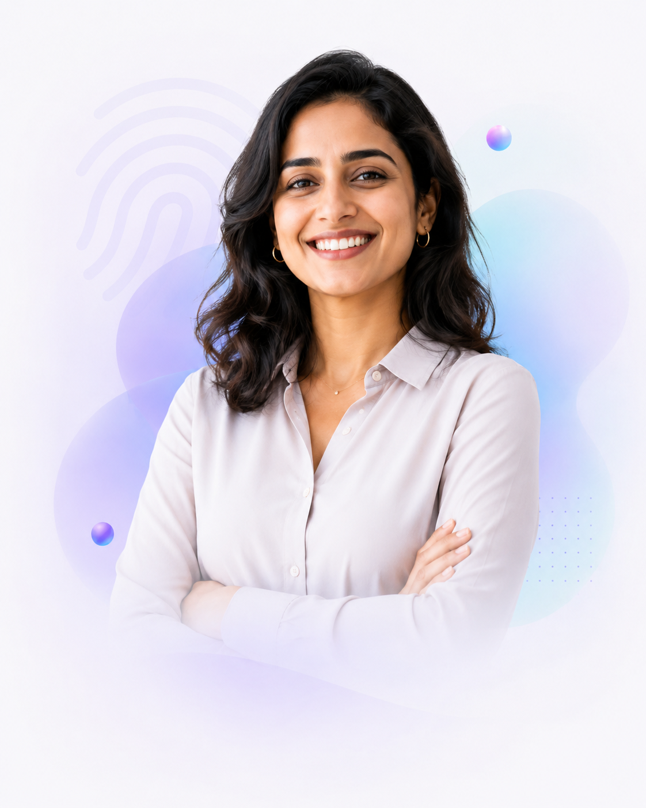
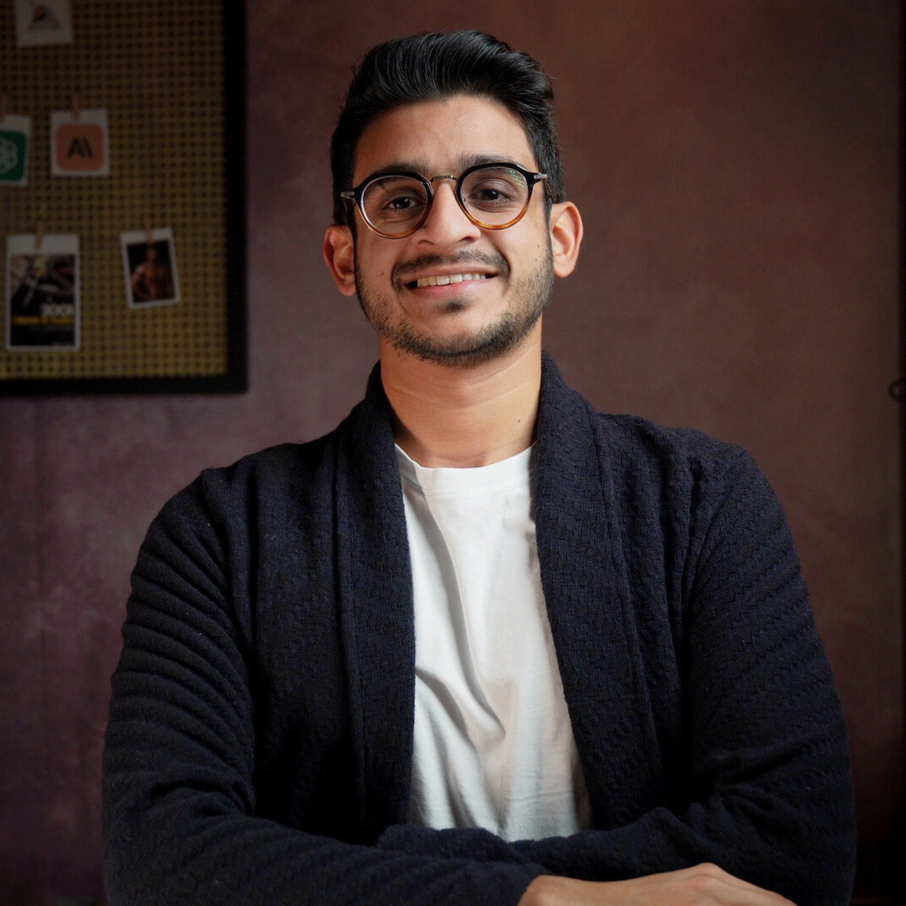

Pour les indépendants et professionnels qui produisent et décident au quotidien. En 5 semaines, sans ligne de commande, vous repartez avec un système qui produit dans votre style, branché sur vos outils, et que vous savez faire évoluer seul. Pour rester remarquable dans un monde qui s'uniformise.
Satisfait ou remboursé à la fin du bootcamp
Chaque production demande une réécriture pour vous ressembler. Vous passez plus de temps à corriger le chat qu'elle ne vous en fait gagner. Le problème n'est pas l'outil : c'est qu'il ne sait rien de vous.
Chaque conversation recommence à vide. Vos dossiers, vos clients, votre façon de structurer une note : rien n'est retenu. Vous réexpliquez votre contexte à une IA qui oublie tout.
Vous avez peut-être suivi une formation aux prompts. Elle vous a appris des recettes interchangeables, les mêmes que pour tout le monde. Des usages génériques produisent des résultats génériques.
de personnes utilisent l'IA avec le même style par défaut. Les mêmes tournures, les mêmes formulations, les mêmes résultats génériques.
Écrire comme tout le monde n'a jamais été aussi facile. Votre empreinte, c'est justement ce qui ne se copie pas.
Vous demandez à l'IA un premier jet. Elle ne connaît ni votre offre, ni ce client, ni votre façon de structurer une proposition. Le texte est correct et impersonnel. Vous passez une heure à le réécrire pour qu'il vous ressemble, en vous demandant si vous n'auriez pas été plus vite seul.
Votre process Proposition charge votre Voix, votre Méthode et l'historique de ce client. Le document sort dans votre structure, avec votre vocabulaire et vos arguments. Vous relisez, vous ajustez deux passages qui demandent votre jugement, et vous envoyez.
Vous ouvrez LinkedIn et trois newsletters, vous survolez, vous enregistrez des articles que vous ne relirez jamais. Vous avez le sentiment permanent de courir derrière, sans savoir ce qui compte vraiment pour votre activité.
Votre veille arrive, déjà filtrée sur vos sujets, reliée à vos projets en cours, avec ce que chaque information change ou ne change pas pour vous. Dix minutes de lecture, et vous savez où vous en êtes.
Vous demandez son avis à l'IA sur une décision. Elle valide poliment tout ce que vous dites. Vous refermez la fenêtre sans être plus avancé, parce qu'un miroir qui approuve n'aide pas à trancher.
Votre note hebdomadaire confronte vos décisions de la semaine à vos objectifs et à votre méthode. Elle bouscule vos idées au lieu de les valider, et pointe la question que vous évitez. C'est vous qui tranchez, mieux armé.
Le contenu est en vidéo, quand vous voulez. Les temps en direct servent à construire et à débloquer. Chaque semaine suit la même structure.
Entre 1 et 2 heures de vidéo par semaine, à regarder quand votre agenda le permet, avec des exercices à faire et des applications directes à mettre en place sur votre propre situation, pas sur un cas d'école. C'est votre matière première pour le Lab.
Le premier temps en direct de la semaine, au format formation et FAQ : on déroule le contenu et on répond à vos questions, les cas particuliers, les hésitations, ce que les vidéos ne couvrent pas. Vous ne restez jamais bloqué plus de quelques jours.
En petit groupe, chacun avance sur son propre système, écran partagé. C'est ici que votre empreinte et vos process se construisent réellement, avec un retour immédiat sur ce qui bloque.
À la fin des 5 semaines, une journée complète en présentiel, en petite communauté, pour pousser le fonctionnement plus loin : on approfondit chaque brique de votre système, on met en place votre protocole de mise à jour, et vous repartez avec un système qui tourne, pas avec une liste de choses à finir. Cette journée est comprise dans le forfait de la formation ; seul le repas du midi n'est pas inclus.
Chaque semaine produit quelque chose que vous gardez. À la fin, vous ne repartez pas avec des notes de cours mais avec un système qui tourne.
On sort de votre tête ce qui fait votre valeur : votre manière d'écrire, de raisonner, de trancher. On pose un cadre pour sortir de l'IA générique (l'AI slop) et commencer à rendre vos contenus uniques. Vos productions passées servent de matière première, et dès le vendredi, vous faites le test avant-après sur un document réel.
Vos trois documents d'empreinte : Voix, Contexte, Méthode.
On passe votre semaine réelle au crible : ce qui se répète, ce qui peut partir, ce qui ne doit jamais partir. Vos process récurrents, vos projets en cours, vos dossiers. Ce que vous connaissez par coeur et n'avez jamais écrit devient lisible.
La carte de vos process et de vos projets vivants.
Votre empreinte devient exécutable. Vos premiers process produisent dans votre style, avec un garde-fou qui signale ce qui ne vous ressemble pas. Par exemple :
Vos deux premiers process, optimisés avec votre empreinte.
On va encore plus loin en connectant vos outils du quotidien (vos mails, vos documents, vos dossiers clients) et en faisant travailler tout cet écosystème de manière intelligente, là où vous travaillez déjà.
Vos connexions actives et un système structuré autour de vos outils.
Vous fabriquez vous-même un process à partir de n'importe quelle tâche encore manuelle. Lors d'une journée en présentiel, en petite communauté, on ouvre la porte sur la suite et on finalise vos systèmes. Cette journée est comprise dans le forfait de la formation ; seul le repas du midi n'est pas inclus.
Le système complet et son protocole de mise à jour.
Empreinte, cartographie, amplification, orchestration, autonomie. Un livrable par semaine, construit sur votre situation, pas sur un cas d'école. Accès à vie aux vidéos et à leurs mises à jour.
En petit groupe, sur votre propre système, écran partagé. C'est là que tout se construit réellement.
La formation de la semaine en direct, et vos cas particuliers traités sur le moment. Vous ne restez jamais bloqué.
Une journée complète à Paris, le samedi 3 octobre, pour approfondir chaque brique du système et installer votre protocole de mise à jour. Comprise dans le forfait, hors repas du midi.
Les prompts et les gabarits qui produisent vos documents d'empreinte. Réutilisables à vie, y compris pour refaire l'exercice quand votre activité évolue.
Des process déjà construits, prêts à adapter : documents dans votre format, veille, notes de réflexion, comptes rendus. Vous partez d'exemples qui marchent, pas d'une page blanche.

Vous suivez toutes les vidéos et les sessions en direct, et vous jouez le jeu des exercices. Si, à la fin du bootcamp, vous ne sentez pas la différence entre votre travail d'avant et votre travail d'après, on en parle lors d'un appel ensemble, et je vous rembourse intégralement. Pas de formulaire à rallonge, pas de conditions cachées : vous avez fait le travail, le résultat n'est pas là, vous êtes remboursé.
Le bootcamp hybride complet, présentiel inclus
Le tarif fondateur n'existe qu'une fois. Chaque session suivante augmente, et c'est annoncé à l'avance, pas inventé au dernier moment.

Ma passion, c'est la robotique et l'innovation, et j'en ai même fait mon expertise. Roboticien de formation, mon ambition est de rendre l'IA accessible et transformatrice pour tous.
C'est d'ailleurs pour ça que j'ai lancé La Machine Pensante, ma chaîne de vulgarisation sur l'IA, active depuis plus de trois ans.
Aujourd'hui, je mets mon bagage technique au service des entreprises et des indépendants : je vous aide à intégrer, de manière raisonnée et efficace, les outils d'IA pour booster votre productivité et votre créativité.
Une IA vraiment utile n'est pas la plus puissante. C'est celle qui vous ressemble.
C'est précisément pour vous que le parcours est conçu. Aucune ligne de commande, aucun code, aucun pré-requis. Tout passe par des outils que vous savez déjà ouvrir. Les approches « second cerveau » qui exigent un terminal sont puissantes, mais elles excluent l'immense majorité des professionnels. Ici, la porte d'entrée est une conversation.
Chaque semaine : 1 à 2 heures de vidéos à placer où vous voulez, une session de formation de 90 minutes et un Lab de 90 minutes en direct. Plus la journée de clôture en présentiel à Paris, le samedi 3 octobre. Le rythme est exigeant mais cadré, et tout ce que vous y construisez sert directement votre activité, dès la semaine 1.
C'est vrai, pour quelqu'un de très assidu, au prix de plusieurs mois de tâtonnements et d'un vrai risque d'abandon en route. Ce que vous achetez ici, c'est le chemin direct, un système structuré, et quelqu'un qui débloque en direct ce qui vous aurait arrêté. Vous payez pour arriver au bout.
Les démonstrations et les gabarits sont fournis pour Claude, l'outil de référence du parcours. La méthode, elle, est transposable : vos documents d'empreinte et vos process sont écrits dans un format neutre, et on choisit l'emballage à la fin. Si votre entreprise vous impose un outil, on l'adapte pendant les Lab.
Non, pour deux raisons. D'abord, ce que vous construisez repose sur des principes, votre empreinte, vos process, votre contexte, qui restent valables quel que soit le modèle du moment. Votre système est conçu pour changer de moteur sans être reconstruit. Ensuite, vous avez accès à vie aux mises à jour des vidéos : quand les outils bougent, le contenu suit.
C'est la bonne question, et c'est le fil rouge du parcours. Le garde-fou construit en semaine 3 fait l'inverse d'un pilote automatique : il signale ce qui ne vous ressemble pas et ce qui exige encore votre jugement. On délègue l'exécution, jamais le jugement. Une IA qui porte votre empreinte ne pense pas à votre place, elle arrête de penser à votre place.
Le sujet est traité dès la construction, pas en disclaimer de fin. On définit ensemble ce qui peut entrer dans le système, sous quelle forme, et ce qui n'y entre jamais. Pour un professionnel qui manipule des données clients, c'est une condition d'exercice, pas une option.
Non. Cette formation n'est éligible ni au CPF ni à une prise en charge OPCO. Le tarif affiché est le tarif réel, et la garantie satisfait ou remboursé tient lieu de filet de sécurité : si le bootcamp ne change pas votre façon de travailler, vous êtes remboursé.
Dans 5 semaines, vous avez un système qui travaille comme vous, connaît vos projets, et que vous savez faire évoluer sans moi. Ou vous êtes remboursé.
Session fondateur à 1 290 € · Les sessions suivantes seront à 1 590 € puis 1 890 €
1 290 € au lieu du prix des sessions suivantes, ce n'est pas une remise, c'est un échange. Les participants de la première session s'engagent à un retour d'expérience honnête et à un témoignage à la fin du parcours. Vous bénéficiez du meilleur tarif que cette formation aura jamais ; les sessions suivantes bénéficient de votre retour. C'est pour ça que le prix remontera ensuite.